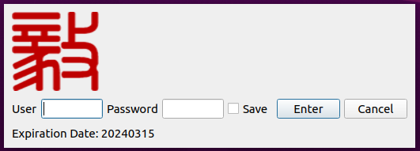
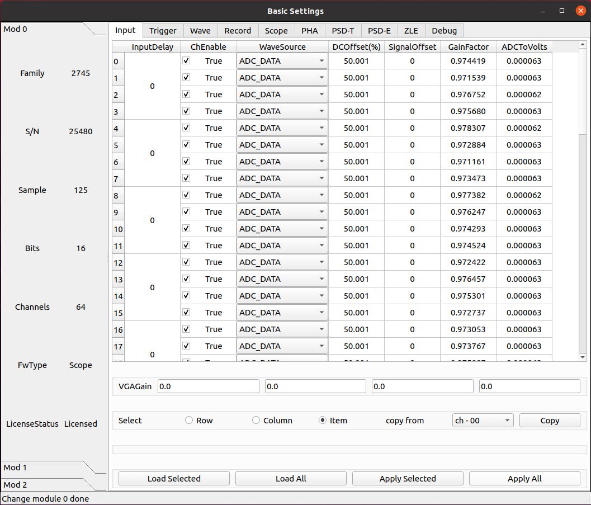
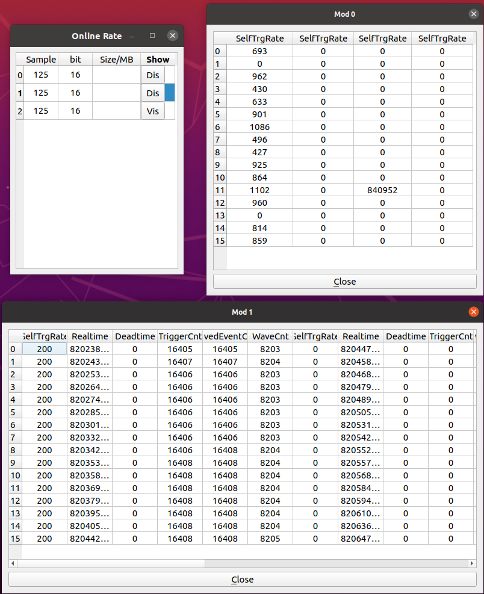
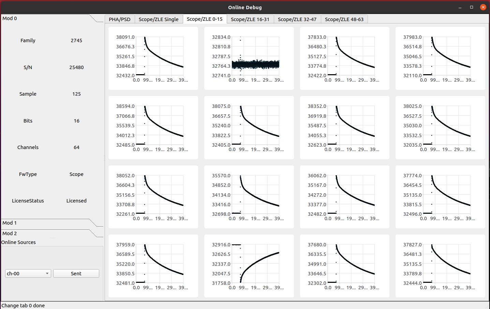

图形交互界面¶
配置文件¶
json 格式文件，主要包含模块的 PID 或者 IP 等信息。
{
"modules": 3,
"connecttype": "eth",
"pid": [25480, 25945, 24946],
"ip": ["162.105.54.162", "162.105.54.187", "162.105.54.90"],
"par": "setting.json"
}
其中，参数 modules 为系统使用数据采集卡数量，参数 connecttype 为采集卡与获取电脑的连接方式，可填写 “usb” 或者 “eth”。使用 usb 读取，单个模块上限为 280 MB/s，使用网络读取，目前使用的 1G 网络，单个模块的上限为 110 MB/s。如果采用 USB 方式读取， 则参数 pid 生效，依次为系统每个模块的 PID。如果采用网络读取，则参数 ip 生效，依次为系统每个模块 IPV4 的 IP。
获取参数文件。
进入 GUI 目录，执行以下命令即可弹出主控制界面
./gddaq
登陆界面¶
为了实现不同登陆账号不同操作权限。
降低实验值班人员的操作权限，目前暂未实现。。。
输入用户名 (admin)、密码 (admin) 后，弹出主控制界面。
主控制界面¶

主界面左上角 File 下拉选择 “connect to device”，弹出如下界面中，点击文件选择框，选择提前配置好的参数文件。

当配置文件加载后，会在对话框中间显示配置主要配置信息，PID 或者 IP 信息。然后点击 “connect”，之后再点击 “boot”，走完进度条之后，该弹出界面自动关闭。所有配置文件中的模块均完成初始化。
主界面左上角 File 下拉选择 “Output Configure”，弹出如下界面。本界面用于设置输出数据的文件夹，文件名称以及运行编号。按 OK 按钮关闭界面。以上信息只能在本界面进行修改，获取主界面显示该信息。

完成系统初始化之后，主控制界面上方的 Basic、Logic、Online、Debug 四个按钮将会浮起，积极即可弹出相应的子界面，再点击即可隐藏。

在弹出的 Basic、Logic、Debug 子界面，当系统为多个模块时通过点击左侧的 “Mod 0”、“Mod 1”、“Mod 2” 等切换标签进行采集模块的切换，切换时会自动读取右边页面中的信息。每个子界面上方有多个标签页，点击该标签即可切换到相应参数配置页面。
由于本程序能够自适应不同的固件，在同一个参数设置标签页，不同的固件中会显示不同的可设置参数。
基础参数设置
逻辑参数设置

实时计数率监视
波形监视与调试
